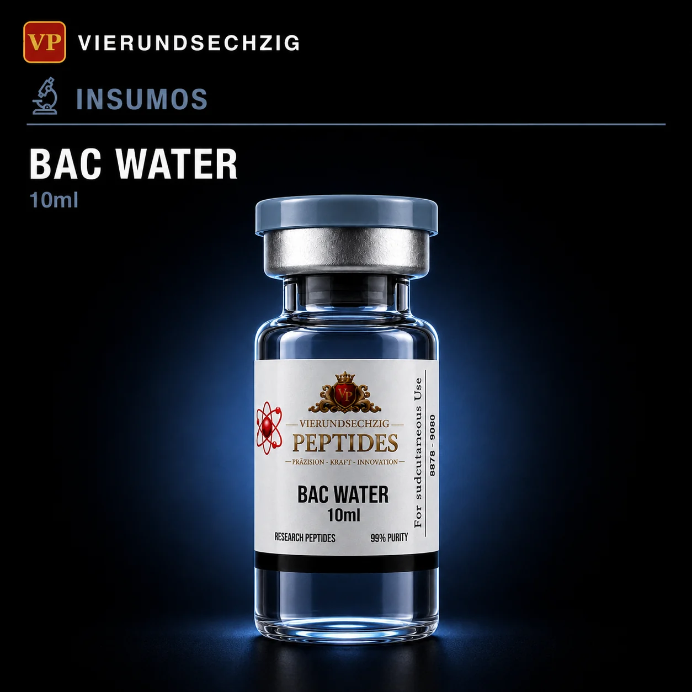

Click para ampliarInsumos
Agua Bacteriostática 10ml
Frasco mayor para protocolos intensivos. Reconstitución múltiple garantizada.
99% Pureza · Research Grade
Presentación de mayor volumen para protocolos con múltiples péptidos o ciclos largos. Mismo estándar de esterilidad con mayor rendimiento por frasco.
₡8.000
Colones costarricenses
Envíos a todo Costa Rica · SINPE Móvil · Transferencia